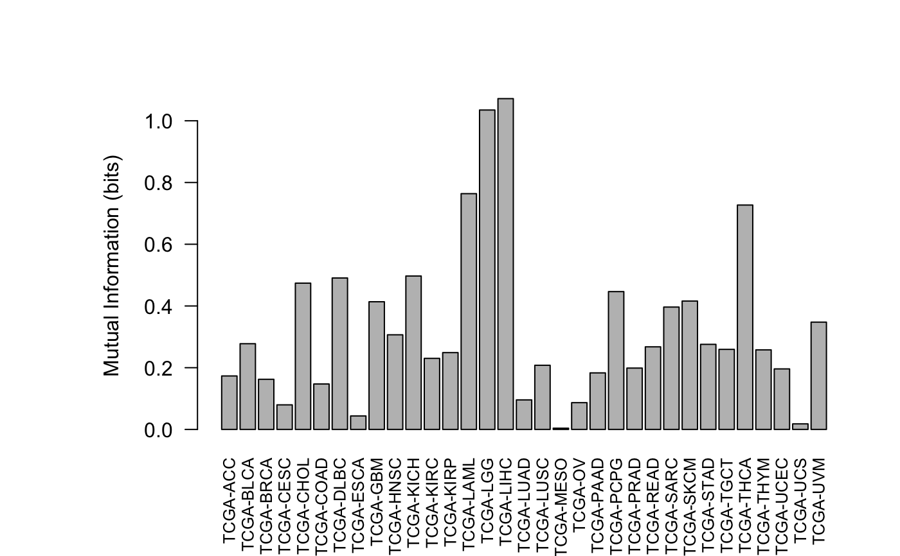

mi_knn.RdMutual Information Calculation
mi_knn(dt, var.d, var.c, k = NULL, warnings = TRUE, FORCE = TRUE, global = TRUE, quite = FALSE)
| dt | a data.frame object |
|---|---|
| var.d | the name of the discrete variable in quotations |
| var.c | the name of the continuouse variable in quotations |
| k | the number of neighbors for MI calculation. |
| warnings | set to FALSE to hide warnings |
| FORCE | set to TRUE continues despite not using an optimum k |
| global | set to FALSE to get specific MI |
| quite | set to TRUE to prevent messages being displayed to the console |
#> project id CCND1 gene_zero #> 1: TCGA-GBM TCGA-02-0047-01A-01R-1849-01 27087.809 0.00000 #> 2: TCGA-GBM TCGA-02-0055-01A-01R-1849-01 22992.089 566.27418 #> 3: TCGA-GBM TCGA-02-2483-01A-01R-1849-01 2826.011 0.00000 #> 4: TCGA-GBM TCGA-02-2485-01A-01R-1849-01 3788.464 0.00000 #> 5: TCGA-GBM TCGA-02-2486-01A-01R-1849-01 104858.883 93.58593 #> --- #> 11089: TCGA-LIHC TCGA-ZS-A9CG-01A-11R-A37K-07 9627.674 0.00000 #> 11090: TCGA-THYM TCGA-ZT-A8OM-01A-11R-A42S-07 24860.055 2234.11516 #> 11091: TCGA-CHOL TCGA-ZU-A8S4-01A-11R-A41I-07 71944.870 343.52261 #> 11092: TCGA-CHOL TCGA-ZU-A8S4-11A-11R-A41I-07 8165.676 0.00000 #> 11093: TCGA-CESC TCGA-ZX-AA5X-01A-11R-A42T-07 26487.175 128.18321# basic example using k = 10 mi_knn(dt = gene_exp, var.d = "project", k = 10, var.c = "CCND1")#> [1] 0.3253909# the function can decide the optimum k mi_knn(dt = gene_exp, var.d = "project", var.c = "CCND1")#>#> [1] 0.3270684# set global = FALSE to get the specific MI for each levels, mi_knn(dt = gene_exp, var.d = "project", var.c = "CCND1", global = FALSE)#>#> project I #> 1: TCGA-LGG 1.034932598 #> 2: TCGA-SARC 0.396460042 #> 3: TCGA-LAML 0.763923231 #> 4: TCGA-KIRC 0.230196889 #> 5: TCGA-GBM 0.413664786 #> 6: TCGA-LIHC 1.072847620 #> 7: TCGA-ACC 0.164198321 #> 8: TCGA-PCPG 0.446545949 #> 9: TCGA-SKCM 0.415979893 #> 10: TCGA-LUAD 0.095703524 #> 11: TCGA-STAD 0.275655864 #> 12: TCGA-BLCA 0.277697236 #> 13: TCGA-LUSC 0.207872674 #> 14: TCGA-MESO 0.004023886 #> 15: TCGA-KIRP 0.248888976 #> 16: TCGA-BRCA 0.162451328 #> 17: TCGA-CHOL 0.473926908 #> 18: TCGA-READ 0.267617116 #> 19: TCGA-UCS 0.018002765 #> 20: TCGA-UCEC 0.196090020 #> 21: TCGA-KICH 0.497103676 #> 22: TCGA-DLBC 0.494721088 #> 23: TCGA-ESCA 0.043721798 #> 24: TCGA-HNSC 0.308234196 #> 25: TCGA-CESC 0.079623854 #> 26: TCGA-COAD 0.147225615 #> 27: TCGA-TGCT 0.257127782 #> 28: TCGA-PAAD 0.183207432 #> 29: TCGA-PRAD 0.198873155 #> 30: TCGA-OV 0.086728308 #> 31: TCGA-THYM 0.257791461 #> 32: TCGA-UVM 0.347631099 #> 33: TCGA-THCA 0.727007615 #> project I# generating a plot for specific MI res <- mi_knn(dt = gene_exp, var.d = "project", var.c = "CCND1", global = FALSE)#>plot(res)